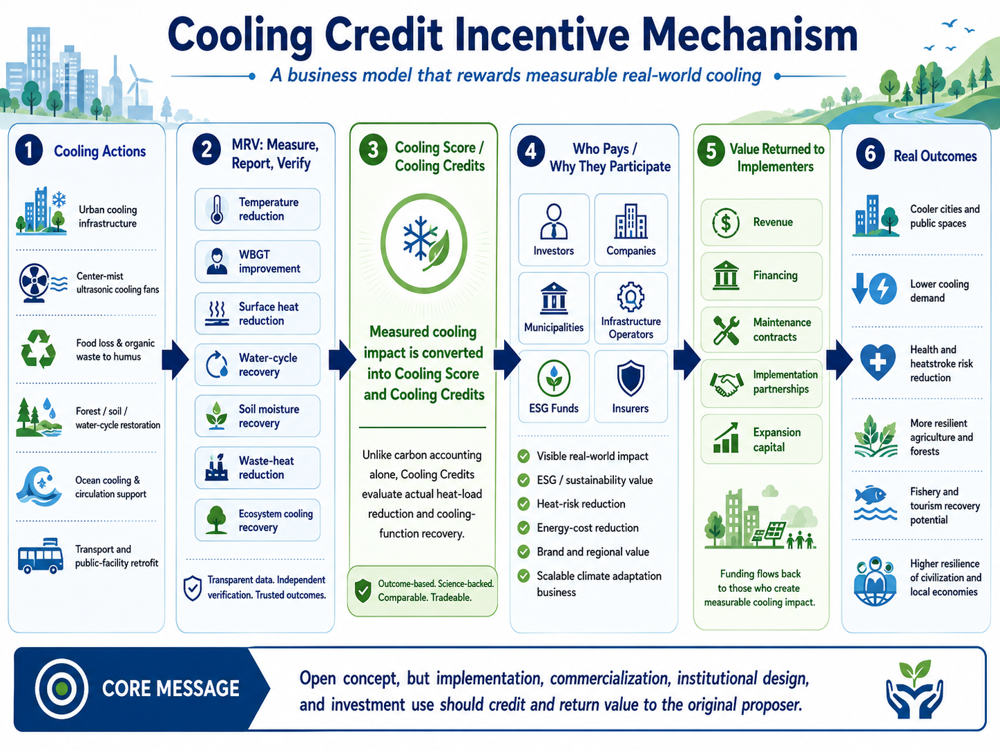
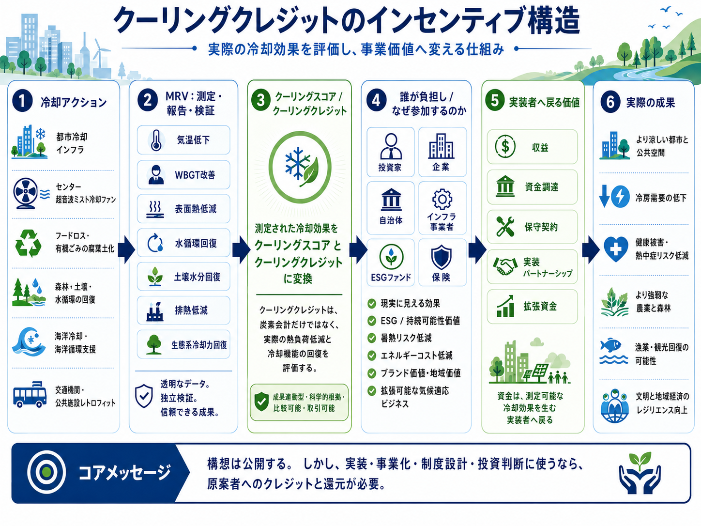
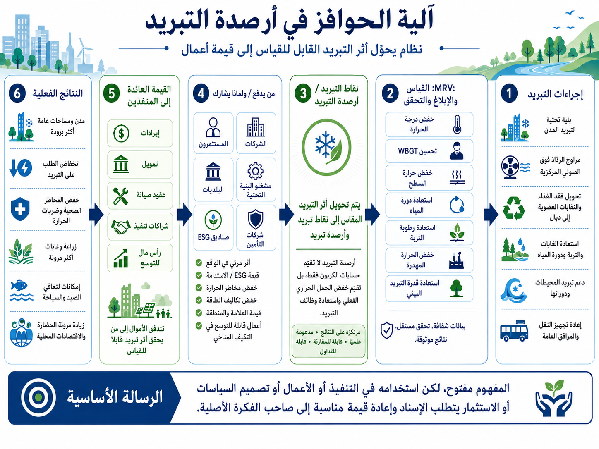

Problem: Carbon Credits Alone Do Not Cool the Planet
Carbon accounting is important, but climate crisis is experienced as heat: hot asphalt, dry soil, weakened water cycles, declining forest evapotranspiration, marine heat, and rising cooling demand.
Global warming is felt as heat, not as numbers on a carbon ledger.
| Item | Carbon Credit | Cooling Credit |
|---|---|---|
| Evaluation target | CO₂ reduction or offset | Heat-load reduction and cooling contribution |
| Primary unit | t-CO₂ equivalent | Temperature reduction, WBGT reduction, surface cooling, water-cycle recovery |
| Core logic | Carbon accounting | Thermal and natural cooling-function accounting |
| Desired result | Cleaner emissions balance | Cooler cities, wetter soils, restored water cycles, lower cooling demand |
問題：カーボンクレジットだけでは地球は冷えない
炭素会計は重要です。しかし、気候危機は「熱」として体験されます。熱いアスファルト、乾いた土壌、弱った水循環、低下した森林蒸散、海洋熱、増え続ける冷房需要。
地球温暖化は、炭素の数字ではなく熱として現れる。
| 項目 | カーボンクレジット | クーリングクレジット |
|---|---|---|
| 評価対象 | CO₂削減・相殺 | 熱負荷削減、冷却貢献 |
| 主な単位 | t-CO₂ equivalent | 気温低下、WBGT低下、地表冷却、水循環回復 |
| 本質 | Carbon accounting | Thermal and natural cooling-function accounting |
| 目指す結果 | 排出帳簿が整う | 都市が冷える、土が湿る、水循環が戻る、冷房需要が減る |
المشكلة: أرصدة الكربون وحدها لا تبرد الكوكب
محاسبة الكربون مهمة، لكن أزمة المناخ تُعاش كحرارة: أسفلت ساخن، تربة جافة، دورة ماء ضعيفة، تراجع نتح الغابات، حرارة بحرية، وطلب متزايد على التبريد.
الاحتباس الحراري يُشعر به كحرارة، لا كأرقام في دفتر كربوني.
| البند | أرصدة الكربون | أرصدة التبريد |
|---|---|---|
| موضوع التقييم | خفض أو تعويض CO₂ | خفض الحمل الحراري والمساهمة في التبريد |
| الوحدة الأساسية | مكافئ طن CO₂ | خفض الحرارة، خفض WBGT، تبريد السطح، استعادة دورة الماء |
| المنطق الأساسي | محاسبة الكربون | محاسبة الحرارة ووظائف التبريد الطبيعية |
| النتيجة المطلوبة | توازن انبعاثات أفضل | مدن أبرد، تربة أكثر رطوبة، دورة ماء متجددة، وطلب تبريد أقل |
Solution: Cooling Credit
Water is the planet’s cooling medium. Cooling Credit is a framework for restoring water cycles, soil moisture, evapotranspiration, urban cooling, forest functions, and ocean circulation, then assigning value to measurable cooling contributions.
Key rule: A Cooling Credit is not a license to emit. A Cooling Credit is proof of cooling contribution.
解決策：Cooling Credit
水は地球の冷却媒体である。クーリングクレジットは、水循環、土壌水分、蒸散、都市冷却、森林機能、海洋循環を回復させ、その冷却貢献を測定し価値化するための制度です。
重要ルール：クーリングクレジットは排出の免罪符ではない。クーリングクレジットは冷却貢献の証明である。
الحل: أرصدة التبريد
الماء هو وسيط تبريد الكوكب. أرصدة التبريد هي إطار لاستعادة دورة الماء، ورطوبة التربة، والنتح، وتبريد المدن، ووظائف الغابات، ودوران المحيطات، ثم منح قيمة للمساهمات القابلة للقياس في التبريد.
قاعدة مهمة: أرصدة التبريد ليست ترخيصا للانبعاث، بل دليل على مساهمة تبريد.
Cooling Credit Incentive Structure
This visual overview shows how measurable cooling actions can be evaluated, verified, converted into Cooling Credits, connected to investors and institutions, and returned to implementers as business value.

クーリングクレジットのインセンティブ構造
この図は、実際の冷却アクションを測定・報告・検証し、クーリングスコア／クーリングクレジットへ変換し、投資家・企業・自治体・インフラ事業者・ESGファンド・保険などへ接続し、実装者へ事業価値として戻す流れを示しています。

هيكل الحوافز في أرصدة التبريد
يوضح هذا المخطط كيف يمكن تقييم إجراءات التبريد القابلة للقياس والتحقق منها، ثم تحويلها إلى أرصدة تبريد، وربطها بالمستثمرين والمؤسسات، وإعادة قيمتها إلى المنفذين كنموذج أعمال قابل للتوسع.

Seasonal and Regional Cooling Strategy Simulation
This simulation compares which Cooling Credit strategy is most effective under different climate and regional conditions: high-humidity rainy regions, humid hot summer cities, dry hot regions, and humid tropical cities.
Key insight: Cooling Credit is not a one-size-fits-all mist-cooling model. It is a thermal accounting framework that changes evaluation methods according to local humidity, rainfall, soil moisture, solar exposure, and seasonal conditions.
| Climate / Region Type | Most Effective Model | Cooling Score | Implication |
|---|---|---|---|
| High-humidity rainy region / RH 85% | Rainwater + Humus + Soil Moisture | 3.95 | Rainy seasons can function as preparation periods for storing future cooling resources. |
| Humid hot summer city / RH 62% | Dehumidification + Airflow | 4.46 | WBGT reduction can become an immediate heat-risk countermeasure. |
| Dry hot region / RH 28% | Mist Evaporative Cooling | 6.84 | Dry hot regions have high compatibility with evaporative cooling. |
| Humid tropical city / RH 78% | Rainwater + Humus + Soil Moisture | 4.97 | Soil- and water-cycle-based cooling models can also apply to humid tropical regions. |
This simulation suggests that Cooling Credits should evaluate the best cooling action for each climate zone, rather than applying the same method everywhere.
View simulation季節・地域別クーリング戦略シミュレーション
このシミュレーションは、高湿度・多雨地域、高温多湿の夏季都市、乾燥高温地域、高湿度熱帯都市において、どのクーリングクレジット戦略が有効かを比較するものです。
重要な示唆：クーリングクレジットは、単一のミスト冷却モデルではありません。地域の湿度、降雨、土壌水分、日射、季節条件に応じて評価方法を切り替える熱会計フレームワークです。
| 気候・地域タイプ | 最も有効なモデル | Cooling Score | 含意 |
|---|---|---|---|
| 高湿度・多雨地域 / RH 85% | 雨水＋腐葉土＋土壌保水 | 3.95 | 雨季・梅雨は、将来の冷却資源を仕込む期間として評価できる。 |
| 高温多湿の夏季都市 / RH 62% | 除湿＋送風 | 4.46 | WBGT低減が即効性のある暑熱リスク対策になる。 |
| 乾燥高温地域 / RH 28% | ミスト気化冷却 | 6.84 | 乾燥高温地域では、気化冷却との適合性が高い。 |
| 高湿度熱帯都市 / RH 78% | 雨水＋腐葉土＋土壌保水 | 4.97 | 高湿度地域でも、土壌・水循環型の冷却モデルが成立する。 |
このシミュレーションは、クーリングクレジットが「どこでも同じ対策」を評価する制度ではなく、気候帯ごとに最適な冷却行為を評価する制度であることを示しています。
シミュレーションを見るمحاكاة استراتيجية التبريد حسب الموسم والمنطقة
تقارن هذه المحاكاة بين استراتيجيات أرصدة التبريد في ظروف مناخية وإقليمية مختلفة: مناطق ممطرة عالية الرطوبة، ومدن صيفية حارة ورطبة، ومناطق حارة جافة، ومدن مدارية عالية الرطوبة.
الفكرة الأساسية: أرصدة التبريد ليست نموذجاً واحداً قائماً على الرذاذ فقط. إنها إطار للمحاسبة الحرارية يغير طريقة التقييم بحسب الرطوبة المحلية، والأمطار، ورطوبة التربة، والتعرض الشمسي، والظروف الموسمية.
| نوع المناخ / المنطقة | النموذج الأكثر فعالية | درجة التبريد | الدلالة |
|---|---|---|---|
| منطقة ممطرة عالية الرطوبة / رطوبة 85% | مياه الأمطار + الدبال + رطوبة التربة | 3.95 | يمكن اعتبار موسم الأمطار فترة لإعداد موارد التبريد المستقبلية. |
| مدينة صيفية حارة ورطبة / رطوبة 62% | إزالة الرطوبة + تدفق الهواء | 4.46 | يمكن أن يكون خفض WBGT إجراءً فورياً لتقليل مخاطر الحرارة. |
| منطقة حارة جافة / رطوبة 28% | التبريد التبخري بالرذاذ | 6.84 | المناطق الحارة الجافة أكثر ملاءمة للتبريد التبخري. |
| مدينة مدارية عالية الرطوبة / رطوبة 78% | مياه الأمطار + الدبال + رطوبة التربة | 4.97 | يمكن أن تنجح نماذج التبريد القائمة على التربة ودورة الماء حتى في المناطق عالية الرطوبة. |
تشير هذه المحاكاة إلى أن أرصدة التبريد يجب أن تقيّم أفضل إجراء تبريد لكل منطقة مناخية، بدلاً من تطبيق الطريقة نفسها في كل مكان.
عرض المحاكاةKeyword Gateways
Start from the sustainability-related word you already know and connect it to Cooling Credits.
English Gateways
個別キーワード入口
すでに知られている環境・サステナビリティ系の言葉から、クーリングクレジットへ接続します。
بوابات الكلمات المفتاحية
ابدأ من كلمة الاستدامة أو المناخ التي تعرفها واربطها بأرصدة التبريد.
Low-Entry Implementation Models
Cooling Credit can begin from visible, measurable, small-scale implementation.
Center-Mist Ultrasonic Cooling Fan
A local cooling device for homes, shops, factories, farms, schools, and evacuation centers.
View conceptFood Loss and Organic Waste to Humus
Organic waste and food loss can become humus, supporting soil moisture, microbial recovery, carbon fixation, and surface cooling.
View business modelsOrganic Matter Soil Recovery and Desert Greening
Connects organic waste humus conversion to farmland soil recovery, dryland restoration, desert-edge greening, and Cooling Credit evaluation.
View modelUrban Cooling Pilot
Schools, station plazas, shopping streets, parks, and public facilities can test cooling interventions and measure temperature, WBGT, and electricity demand.
Pilot packageOcean and Watershed Recovery
Ocean circulation support, watershed restoration, soil moisture recovery, and forest regeneration can become long-term Cooling Credit areas.
Direct Planetary Cooling低参入型実装モデル
クーリングクレジットは、見える、測れる、小さく始められる実装から始められます。
نماذج تنفيذ منخفضة الدخول
يمكن أن تبدأ أرصدة التبريد من تنفيذ صغير، مرئي، وقابل للقياس.
مروحة تبريد برذاذ فوق صوتي مركزي
جهاز تبريد محلي مناسب للمنازل والمتاجر والمصانع والمزارع والمدارس ومراكز الإيواء.
عرض المفهومتحويل فقدان الغذاء والنفايات العضوية إلى دبال
يمكن تحويل النفايات العضوية وفقدان الغذاء إلى دبال يدعم رطوبة التربة وتعافي الميكروبات وتثبيت الكربون وتبريد السطح.
عرض نماذج الأعمالدورة المادة العضوية لاستعادة التربة وتخضير المناطق الجافة
يربط تحويل المخلفات العضوية إلى مادة عضوية للتربة باستعادة الأراضي الزراعية، واستصلاح المناطق الجافة، وتخضير حواف الصحارى، وتقييم أرصدة التبريد.
عرض النموذجتجربة تبريد المدن
يمكن للمدارس وساحات المحطات والأسواق والحدائق والمرافق العامة اختبار إجراءات التبريد وقياس الحرارة وWBGT والطلب على الكهرباء.
حزمة التجربةاستعادة المحيطات والأحواض المائية
يمكن أن يصبح دعم دوران المحيطات واستعادة الأحواض ورطوبة التربة والغابات مجالات طويلة الأمد لتقييم أرصدة التبريد.
التبريد الكوكبي المباشرFor Investors, Municipalities, Companies, and Researchers
Investors
Explore Cooling Credit as a new measurable climate-adaptation and natural-regeneration value category.
FrameworkMunicipalities and Companies
Start with 30-day and 90-day pilot projects for urban cooling, heat-risk reduction, and cooling-demand reduction.
Pilot GuideSupport the Originator
This open framework was created by an independent Japanese conceptor. Collaboration, sponsorship, implementation support, and research partnership are welcome.
Support / Sponsor投資家・自治体・企業・研究者へ
للمستثمرين والبلديات والشركات والباحثين
للمستثمرين
يمكن النظر إلى أرصدة التبريد كفئة جديدة من قيمة التكيف المناخي وتجدد الطبيعة القابلة للقياس.
الإطارللبلديات والشركات
يمكن البدء بمشروعات تجريبية لمدة 30 أو 90 يوما لتبريد المدن وخفض مخاطر الحرارة والطلب على التبريد.
دليل التجربةدعم صاحب الفكرة
تم إنشاء هذا الإطار المفتوح بواسطة مفكر مستقل من اليابان. نرحب بالتعاون والرعاية ودعم التنفيذ والشراكات البحثية.
الدعم / الرعايةFAQ
FAQ
أسئلة شائعة
Core Repositories
Cooling Credit Framework
Core institutional framework for valuing measurable cooling actions.
Direct Planetary Cooling
Higher-level concept for restoring the Earth’s original natural cooling functions.
Implementation Portfolio
Business and implementation models connected to Cooling Credits.
Carbon Credit Limitations
Explains why carbon credits alone do not directly prove planetary cooling, and why measurable cooling outcomes require Cooling Credits.
El Niño Warning
Connects El Niño, ocean heat accumulation, marine heat waves, ecosystem risks, and Cooling Credits as a thermal accounting response.
Climate Disasters and Heat Redistribution
Explains climate disasters as overloaded heat and water-vapor redistribution, and connects disaster prevention to thermal accounting and Cooling Credits.
Keyword Maps
中核リポジトリ
キーワード接続マップ
المستودعات الأساسية
حدود أرصدة الكربون
يوضح لماذا لا تثبت أرصدة الكربون وحدها تبريد الكوكب، ولماذا تحتاج نتائج التبريد القابلة للقياس إلى أرصدة التبريد.
تحذير النينيو
يربط بين النينيو، وتراكم حرارة المحيط، وموجات الحر البحرية، ومخاطر النظم البيئية، وأرصدة التبريد بوصفها استجابة للمحاسبة الحرارية.
الكوارث المناخية وإعادة توزيع الحرارة
يشرح الكوارث المناخية بوصفها إعادة توزيع مثقلة للحرارة وبخار الماء، ويربط الوقاية من الكوارث بالمحاسبة الحرارية وأرصدة التبريد.